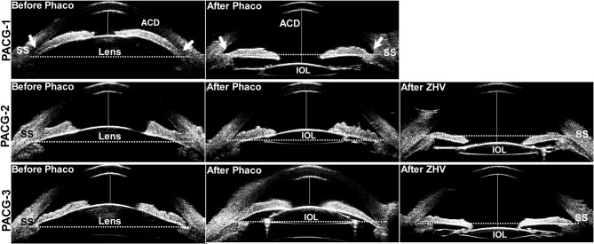
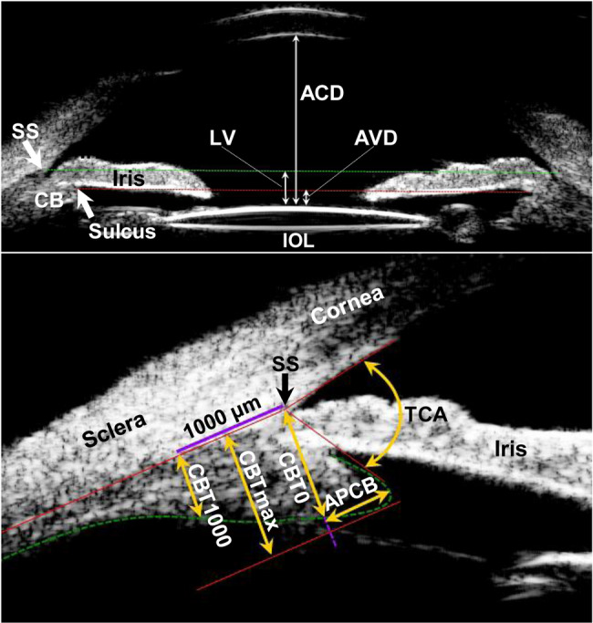
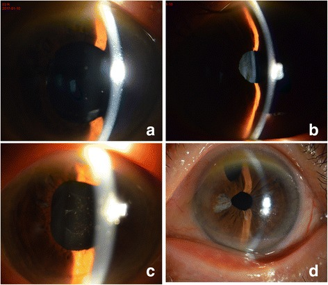
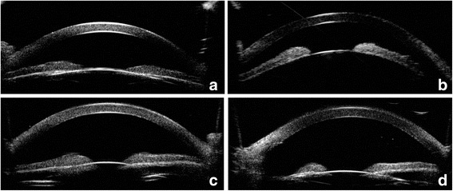

1448 — Glôcôm ác tính (aqueous misdirection) sau mổ nội nhãn, và mắt nanophthalmos / Malignant glaucoma (aqueous misdirection syndrome) after intraocular surgery in the nanophthalmic eye
Tags: pattern:glaucoma pattern:tien-phong-det pattern:nhan-ap-cao pattern:mat-mot-ben pattern:nanophthalmos vung:mat vung:tien-phong vung:dich-kinh vung:nhan-cau protocol:UBM protocol:AS-OCT protocol:slit-lamp protocol:do-nhan-ap protocol:YAG
Mức chắc chắn (certainty): tổng hợp y văn (literature synthesis) — 1 đoàn hệ UBM 60 mắt (30 mắt glôcôm ác tính giả thể thủy tinh + 30 mắt chứng, BMC Ophthalmol 2025, PMC12036250), 1 loạt ca 12 mắt sau phaco (2025, PMC11718072), 1 ca nanophthalmos 82 tuổi điều trị bằng laser (BMC Ophthalmol 2018, PMC5824548). Số liệu lấy từ toàn văn/bảng; câu nào là suy luận được ghi [suy luận].
Vì sao bài này quan trọng: đây là "glôcôm góc đóng" mà mống mắt KHÔNG bị bít — tiền phòng dẹt + nhãn áp cao sau mổ, lỗ mở mống mắt (iridotomy) đã thông mà vẫn không giải quyết. Điều trị ngược hoàn toàn với glôcôm góc đóng cấp: atropine làm giãn thể mi, pilocarpine làm nặng thêm. Ba bẫy chết người: nhãn áp "chỉ 18–30 mmHg" nên không nghĩ glôcôm, tiền phòng dẹt bị đổ cho rò vết mổ, và mắt nanophthalmos bị xem là "chỉ cần phaco là an toàn".
1. Tổng quan bệnh học – cơ chế hình ảnh
- Tên gọi: glôcôm ác tính (malignant glaucoma) = hội chứng thủy dịch đi lạc hướng (aqueous misdirection syndrome, AMS) = glôcôm do tắc thể mi (ciliary block glaucoma). Ba tên cùng một bệnh; "ác tính" chỉ nói tiên lượng xấu nếu xử trí sai, không phải ung thư.
- Bộ ba chẩn đoán (phải đủ cả 3):
- Tiền phòng dẹt — dẹt cả trung tâm lẫn ngoại vi (khác glôcôm góc đóng: trung tâm còn, ngoại vi dẹt).
- Nhãn áp cao (thường 30–60 mmHg; có ca chỉ 18,6–30,8 mmHg khi đã dùng thuốc — PMC5824548).
- Bối cảnh sau mổ nội nhãn (trabeculectomy, đặt ống dẫn lưu, phaco, YAG bao sau) và lỗ mở mống mắt đã thông.
- Sinh lý bệnh — TẠI SAO thủy dịch "đi lạc": thủy dịch do biểu mô thể mi tiết ra (~2,5 µL/phút) bình thường chảy qua đồng tử vào tiền phòng. Trong AMS, thể mi xoay ra trước và mỏm thể mi áp sát chu biên thể thủy tinh / IOL → tạo "van một chiều": thủy dịch bị đẩy về phía sau vào dịch kính, tích trong các khoang dịch kính (schisis) và khoang trên thể mi. Vì màng hyaloid trước còn nguyên là hàng rào, khối dịch kính căng ra và đẩy toàn bộ màng mống mắt–thể thủy tinh/IOL ra trước → tiền phòng dẹt, góc đóng thứ phát, nhãn áp tăng.
- TẠI SAO nhãn áp cao mà tiền phòng lại dẹt (nghịch lý cần hiểu): áp lực trong khoang sau (dịch kính) cao hơn tiền phòng; củng mạc là vỏ đàn hồi kém nên áp lực đó truyền ra thành nhãn cầu và đo được bằng nhãn áp kế, trong khi tiền phòng bị "bóp" rỗng. Vì vậy nhãn áp không phản ánh áp lực trong tiền phòng, và chọc tiền phòng cho "chảy bớt" là vô ích (nước sẽ bị đẩy ra ngay, có khi gây rò và mất tiền phòng nặng hơn).
- TẠI SAO nanophthalmos là thể nặng nhất: mắt trục ngắn (AL < 20,5 mm), củng mạc dày, khoảng cách củng mạc–củng mạc (scleral spur to spur) hẹp, thể mi chen chúc trong vòng xơ cứng; mổ nội nhãn làm thể mi phù và xoay ra trước dễ hơn hẳn. Glôcôm gặp ở 51,88% mắt nanophthalmos (phân tích gộp 44 nghiên cứu, 1.397 mắt — bài 418).
- TẠI SAO thấy được trên UBM (vật lý): UBM 35–50 MHz, độ phân giải trục ~50 µm, xuyên qua củng mạc/giác mạc trong suốt và không cần mở nhãn cầu → thấy trực tiếp thể mi, mỏm thể mi, màng hyaloid trước, góc tiền phòng. CT (độ phân giải ~0,5–1 mm) và MRI (bức xạ không, nhưng không phân giải nổi thể mi 0,3–0,5 mm) không dùng để chẩn đoán AMS; chúng chỉ để loại trừ khối sau nhãn cầu. AS-OCT đo tốt độ sâu tiền phòng và cấu hình mống mắt–IOL nhưng kém xuyên qua mống mắt/củng mạc nên không thay được UBM khi cần nhìn thể mi.
- Số liệu định lượng cốt lõi (bắt buộc nhớ):
- Tần suất: 2–4% sau mổ glôcôm (trabeculectomy/ống dẫn lưu); < 2% tổng số ca glôcôm (PMC11718072).
- Thời điểm khởi phát sau phaco: trung bình 888 ngày (SD ± 1.210; khoảng 1–2.920 ngày ≈ 8 năm) — 12 mắt (PMC11718072). Nghĩa là AMS giả thể thủy tinh có thể xuất hiện nhiều năm sau mổ, không chỉ vài ngày.
- UBM trước cơn (30 mắt glôcôm ác tính giả thể thủy tinh so với 30 mắt chứng, đều là PACG đã phaco): trước mổ ACD 1,97 ± 0,12 mm (chứng 1,99 ± 0,27 mm, p = 0,638) và AL 21,96 ± 0,61 mm (chứng 22,25 ± 0,71 mm, p = 0,101) — không khác nhau; điểm khác duy nhất là CBTmax 0,87 ± 0,09 mm so với 0,95 ± 0,09 mm (p = 0,001) (PMC12036250).
- Lúc cơn: ACD 2,41 mm (2,25–2,53) so với 3,54 mm (3,39–3,75); lens vault (LV) 0,46 mm so với −0,60 mm; AVD 0,69 mm so với −0,35 mm; TCA 53,92 ± 13,41° so với 70,92 ± 10,65° — tất cả p < 0,001 (PMC12036250). LV/AVD dương nghĩa là cực trước IOL đã vượt lên TRÊN đường nối hai gai củng mạc — dấu chốt trên UBM.
- Giá trị tiên đoán: CBTmax là biến duy nhất có giá trị tiên đoán trước cơn — AUC 0,74 (95% CI 0,61–0,87); p = 0,001; lúc cơn AUC 0,86 (0,76–0,96) (PMC12036250).
- Sau phaco, thể mi dày lên ở mắt KHÔNG bị AMS: CBTmax 0,95 → 1,05 mm, CBT0 0,85 → 0,92 mm, TCA 62,6 → 70,9°; ở mắt bị AMS không dày lên (CBTmax 0,87 → 0,87 mm) (PMC12036250). [suy luận] Đây là lý do "phaco xong vẫn phải đo lại UBM" ở mắt nguy cơ.
- Kết quả điều trị: laser mở mống mắt (LIT) 4 mắt → 3 mắt hết; 9 mắt phải phẫu thuật 23G vitrectomy + irido-zonulectomy; biến chứng hay gặp nhất phù hoàng điểm dạng nang (CME) 30% (PMC11718072). Zonulo-hyaloido-vitrectomy (ZHV) đạt 100% thành công, không tái phát trong 6 tháng ở 30 mắt (PMC12036250, dẫn lại từ tài liệu trước).
- Ca nanophthalmos (82 tuổi, nam): phaco không biến chứng, 2 tháng sau vào viện vì glôcôm ác tính, IOP dao động 18,6–30,8 mmHg dù đã dùng thuốc; thất bại với mở mống mắt ngoại vi bằng phẫu thuật + gỡ dính góc; một lần laser mở bao sau + cắt màng dịch kính trước → IOP về bình thường và tiền phòng sâu trong 24 giờ, ổn định 9 tháng, thị lực 20/50 (PMC5824548).
2. Mẫu hình + chẩn đoán phân biệt theo vị trí (gamut)
Câu hỏi 1 — tiền phòng dẹt ở mắt ĐÃ MỔ, nhãn áp CAO hay THẤP?
- Dẹt + nhãn áp CAO → aqueous misdirection, glôcôm góc đóng do bít đồng tử (pupillary block), hội chứng tắc bao (capsular block), xuất huyết trên hắc mạc (suprachoroidal hemorrhage), tràn dịch thể mi/hắc mạc gây đóng góc.
- Dẹt + nhãn áp THẤP → rò vết mổ (wound leak), quá lọc sau trabeculectomy, hạ nhãn áp do thuốc, bong hắc mạc. Đây là phân nhánh quyết định — đo nhãn áp trước, rồi mới đo độ sâu tiền phòng.
Câu hỏi 2 — lỗ mở mống mắt có thông không?
- PI thông + vẫn dẹt/dẹt lại → loại trừ bít đồng tử, nghĩ misdirection (hoặc tắc bao nếu IOL còn bít lỗ bao sau).
- PI bít/không có → bít đồng tử trước tiên; mở PI rồi đánh giá lại.
Câu hỏi 3 — có gì ở phía SAU mống mắt (UBM/B-scan)?
- Không có khối, không có dịch trên hắc mạc, màng hyaloid trước nguyên → misdirection.
- Dịch trên hắc mạc/trên thể mi → tràn dịch thể mi–hắc mạc (nguyên nhân hoặc bạn đồng hành).
- Khối tăng âm trong dịch kính, "kissing choroid" → xuất huyết trên hắc mạc (cấp cứu).
- Khối đặc sau nhãn cầu → u (melanoma, di căn), nang — hiếm nhưng phải loại trừ trước khi mổ dịch kính.
Gamut theo bối cảnh mổ (dễ nhớ):
- Sau phaco/trong bao IOL: capsular block (ngày 1–7, dịch đục sau IOL), misdirection giả thể thủy tinh (ngày → 8 năm), IOL bị bắt giữ đồng tử (optic capture).
- Sau trabeculectomy/ống dẫn lưu: misdirection (2–4%), quá lọc/hạ nhãn áp, bít lỗ củng mạc.
- Sau YAG bao sau / sau chấn thương: vỡ màng hyaloid → misdirection thường gặp hơn (mất hàng rào nhưng dịch kính lỏng hóa di chuyển dễ) [suy luận].
- Mắt nanophthalmos / góc hẹp / đục thể thủy tinh bẩm sinh: nguy cơ cao nhất, cân nhắc phẫu thuật một thì + theo dõi UBM.

Cột "Before Phaco": tiền phòng nông, thể mi áp sát chu biên thể thủy tinh. Cột "After Phaco": ở PACG-2 và PACG-3 màng mống mắt–IOL bị đẩy ra trước, tiền phòng dẹt lại — dấu chốt của misdirection giả thể thủy tinh. Cột "After ZHV": sau mổ tiền phòng sâu trở lại. Nguồn: Qin YJ và cs, BMC Ophthalmol 2025 (PMC12036250) Fig. 2, CC BY 4.0.3. Bảng so sánh phân biệt (ma trận đối chiếu)
| Thực thể (entity) | Hình ảnh điển hình (slit lamp / UBM / B-scan) | Chốt vào (rule-in) | Chốt loại (rule-out) | Gợi ý xác nhận |
|---|---|---|---|---|
| Aqueous misdirection (glôcôm ác tính) | Tiền phòng dẹt đều cả trung tâm và ngoại vi; IOL/mống mắt đẩy ra trước vượt đường gai củng mạc (LV 0,46 mm, AVD 0,69 mm); không dịch trên hắc mạc; PI thông | PI thông + AC dẹt + IOP cao sau mổ + không có dịch trên hắc mạc | Có dịch trên hắc mạc rõ → tràn dịch thể mi–hắc mạc; IOP thấp → rò/quá lọc | UBM 35–50 MHz; atropine 1% thử (đáp ứng = ủng hộ) |
| Bít đồng tử (pupillary block) | Mống mắt phồng (iris bombe) — tiền phòng trung tâm còn, ngoại vi dẹt; PI không thông/bít | PI bít + iris bombe + mở PI giải quyết ngay | PI thông mà vẫn dẹt → không phải bít đồng tử | Soi góc; mở PI bằng laser rồi đánh giá lại |
| Hội chứng tắc bao (capsular block) | Ngày 1–7 sau phaco; IOL bị đẩy ra sau, dịch đục (milky) kẹt giữa IOL và bao sau; tiền phòng nông | Dịch sau IOL + thời điểm sớm + YAG bao sau giải quyết | Dịch kính căng, nhiều năm sau mổ → misdirection | Khe sáng hẹp; YAG bao sau |
| Xuất huyết trên hắc mạc | Đau dữ dội; bong hắc mạc hình vòm sẫm màu, có khi "kissing choroid"; B-scan: khối tăng âm dày dưới hắc mạc | Đau + bong hắc mạc dày + tăng âm trên B-scan | Không đau, hắc mạc áp sát, UBM chỉ thấy thể mi xoay → misdirection | B-scan cấp cứu; theo dõi tan máu |
| Tràn dịch thể mi–hắc mạc | Dịch đồng vang thấp khoang trên hắc mạc/trên thể mi; góc đóng thứ phát; thường hạ nhãn áp hoặc IOP cao khi đóng góc | Dịch trên thể mi/hắc mạc trên UBM | Không có dịch, chỉ thể mi xoay → misdirection | UBM; ngừng thuốc gây (topiramate...), corticoid |
| Rò vết mổ / quá lọc | Tiền phòng dẹt + IOP THẤP; Seidel dương; giác mạc nhăn | Seidel (+) hoặc IOP < 6 mmHg | IOP cao → không phải rò | Thử fluorescein; băng ép/khâu |
| Khối sau nhãn cầu | B-scan: khối đặc, có thể kèm bong võng mạc tiết dịch | Khối đặc trên B-scan/CT–MRI | Không khối → loại | B-scan, CT/MRI hốc mắt |
- Ảnh đối chiếu lâm sàng: slit lamp mắt nanophthalmos trước và sau điều trị (a–b: tiền phòng dẹt; c–d: tiền phòng sâu trở lại sau laser/mổ) —
images/1448_glaucoma-ac-tinh_SL-nanophthalmos_PMC5824548-F1.jpg.
4. Protocol chụp + hệ phân độ/điểm chuẩn hóa
Bước 1 — khám tại chỗ (quyết định trước mọi hình ảnh):
- Nhãn áp (Goldmann) + độ sâu tiền phòng trung tâm (khe sáng hẹp) + tiền phòng ngoại vi (soi góc).
- Seidel (loại rò) và tình trạng lỗ PI (thông/bít).
- Vị trí IOL (trong bao / rãnh / bắt giữ đồng tử), dấu hiệu tắc bao (dịch sau IOL).
Bước 2 — UBM 35–50 MHz (khảo sát 4 góc phần tư, đo 3 lần lấy trung vị):
| Tham số | Cách đo | Ngưỡng/ý nghĩa |
|---|---|---|
| ACD (central anterior chamber depth) | mặt trong giác mạc trung tâm → mặt trước thể thủy tinh/IOL | Lúc cơn 2,41 mm so với 3,54 mm ở mắt chứng |
| LV (lens vault) | cực trước IOL → đường nối hai gai củng mạc (scleral spur) | Dương (vượt đường) = màng chắn đã bị đẩy ra trước; lúc cơn 0,46 mm |
| AVD (anterior vault distance) | cực trước IOL → đường nối hai rãnh thể mi | Lúc cơn 0,69 mm |
| CBTmax (độ dày thể mi tối đa) | điểm trong cùng của thể mi → bờ trong củng mạc | Mỏng trước cơn: 0,87 mm so với 0,95 mm; AUC 0,74 |
| TCA (trabecular–ciliary angle) | mặt sau giác mạc ↔ mặt trước thể mi | Lúc cơn 53,9° so với 70,9° |
| APCB | bờ trước thể mi → đường thẳng đứng qua gai củng mạc | Tăng khi đã có cơn, không dùng để tiên đoán sớm |

Trên: ACD, LV, AVD so với đường nối hai gai củng mạc (SS, đường xanh lá) và rãnh thể mi (đường đỏ). Dưới: CBT0, CBTmax, CBT1000, APCB và TCA. Nguồn: Qin YJ và cs, BMC Ophthalmol 2025 (PMC12036250) Fig. 1, CC BY 4.0.Bước 3 — hình ảnh bổ trợ: AS-OCT khi chỉ cần độ sâu tiền phòng và cấu hình mống mắt–IOL (nhanh, không cần tiếp xúc); B-scan 10 MHz khi phương tiện đục hoặc nghi xuất huyết trên hắc mạc/khối sau nhãn cầu.
Bước 4 — điều trị theo bậc (không có RADS; dùng thuật toán):
flowchart TD
A[Tiền phòng dẹt sau mổ nội nhãn] --> B{Nhãn áp}
B -->|Thấp, Seidel dương| C[Rò vết mổ: băng ép/khâu, ngừng thuốc hạ áp]
B -->|Cao| D{PI có thông và không có dịch trên hắc mạc?}
D -->|Không| E[Bít đồng tử hoặc tràn dịch thể mi: mở PI / điều trị nguyên nhân]
D -->|Có| F[Aqueous misdirection]
F --> G[Bậc 1: atropine 1% + thuốc hạ nhãn áp + corticoid + hyperosmolar]
G --> H{24-72 giờ tiền phòng sâu lại?}
H -->|Có| I[Tiếp tục atropine, theo dõi UBM]
H -->|Không| J[Bậc 2: laser YAG bao sau / màng hyaloid trước, iridoplasty bằng argon]
J --> K{Tiền phòng sâu lại?}
K -->|Có| I
K -->|Không| L[Bậc 3: vitrectomy 23-25G + irido-zonulo-hyaloidotomy; mắt còn thể thủy tinh: lấy thể thủy tinh]
L --> M[Theo dõi CME 30%, nhãn áp, UBM 6 tháng]
- Nguyên tắc thuốc — chỗ hay sai: atropine 1% (giãn thể mi, kéo thể mi ra sau) là thuốc chủ lực; pilocarpine chống chỉ định (co thể mi làm mỏm thể mi áp sát chu biên thể thủy tinh hơn); hạ nhãn áp bằng ức chế tiết (timolol, dorzolamide, brimonidine) + acetazolamide/hyperosmolar; corticoid tại chỗ giảm phù thể mi.
- Bậc 2 — laser: YAG mở bao sau/màng hyaloid trước (hiệu quả nhất khi còn dịch kính lỏng hóa/đã phaco); argon iridoplasty ngoại vi ít dùng hơn.
- Bậc 3 — mổ: vitrectomy + irido-zonulo-hyaloidotomy (nối tiền phòng với khoang dịch kính qua một đường ở chu biên); thành công 100% trong 6 tháng ở loạt 30 mắt (PMC12036250 dẫn lại); mắt còn thể thủy tinh thì lấy thể thủy tinh ± vitrectomy.
- Theo dõi: nhãn áp + tiền phòng ngày 1, tuần 1, tháng 1–3–6; OCT hoàng điểm tìm CME (30%); UBM lặp lại nếu tiền phòng nông lại.
5. Biến thể bình thường và cạm bẫy
- Biến thể bình thường dễ nhầm: mắt nanophthalmos có ACD < 2,2 mm và AL < 20,5 mm từ trước mổ — tiền phòng nông là "bình thường" của mắt này, nên dẹt thêm sau mổ mới là bất thường. Đừng lấy ngưỡng ACD của mắt thường (≈ 3,0–3,5 mm) để đánh giá.
- Cạm bẫy 1 — "nhãn áp chỉ hơi cao": ca nanophthalmos 18,6–30,8 mmHg dưới thuốc (PMC5824548) — không có cơn tăng vọt 50–60 mmHg vẫn là glôcôm ác tính. Nhãn áp bình thường không loại trừ khi đã dùng thuốc.
- Cạm bẫy 2 — PI "đã mở" nên loại trừ misdirection: PI thông chỉ loại trừ bít đồng tử, không loại trừ misdirection. Ngược lại, PI thông + tiền phòng vẫn dẹt là dấu hiệu ủng hộ misdirection.
- Cạm bẫy 3 — dùng pilocarpine: làm nặng thêm; đây là lỗi hay gặp khi chẩn đoán nhầm thành glôcôm góc đóng cấp.
- Cạm bẫy 4 — chọc tiền phòng "cho xẹp": thủy dịch bị đẩy ra sau ngay, không giải quyết, lại có nguy cơ rò/mất tiền phòng và viêm nội nhãn.
- Cạm bẫy 5 — bỏ sót dịch trên hắc mạc đi kèm: tràn dịch thể mi có thể vừa là nguyên nhân vừa là hậu quả; UBM trước khi mổ dịch kính là bắt buộc.
- Cạm bẫy 6 — đo CBTmax sai thời điểm: thuốc cycloplegic/corticoid làm thay đổi thể mi; muốn dùng CBTmax làm chỉ báo tiên đoán thì đo trước cơn/trước mổ (PMC12036250).
- Cạm bẫy 7 — "phaco xong là hết nguy cơ": AMS giả thể thủy tinh khởi phát tới 2.920 ngày (8 năm) sau phaco (PMC11718072) — bệnh nhân nanophthalmos/góc hẹp cần được dặn triệu chứng và theo dõi dài.
- Bẫy "thỏa mãn tìm kiếm": thấy một mắt đã xử lý xong thì không khám mắt bên — nanophthalmos hai bên, mắt bên thường đã mổ hoặc sẽ mổ.
6. Tự lượng giá — Blind Quiz ngay trên trang tĩnh
Ca 1 — nam 82 tuổi, nanophthalmos, 2 tháng sau phaco mắt phải. Nhìn ảnh, mô tả trước khi mở đáp án.

- Gợi ý lâm sàng: phaco không biến chứng 2 tháng trước, nay nhìn mờ, IOP 18,6–30,8 mmHg dù đã dùng thuốc hạ áp.
- Câu hỏi: (1) Tiền phòng ở (a) và (b) khác gì tiền phòng ở (c) và (d)? (2) Ba chẩn đoán phân biệt? (3) Dấu hiệu nào loại trừ bít đồng tử?
Bấm để hiện đáp án (findings + chẩn đoán)
- Dấu hiệu (findings): (a) mắt phải và (b) mắt trái — tiền phòng rất nông, mống mắt áp sát giác mạc; (c) sau laser mắt phải và (d) sau mổ mắt trái — tiền phòng sâu, thấy rõ IOL.
- Chẩn đoán (diagnosis): glôcôm ác tính (aqueous misdirection) trên mắt nanophthalmos — thủy dịch đi lạc về dịch kính đẩy màng mống mắt–IOL ra trước; không phải bít đồng tử vì mống mắt không phồng kiểu iris bombe và mở mống mắt + gỡ dính góc đã thất bại.
- Nguồn ảnh: Wang J, Du E, Tang J. BMC Ophthalmol 2018 (PMC5824548) Fig. 1, CC BY 4.0.
Ca 2 — cùng bệnh nhân, UBM trước và sau điều trị. Đoán trước khi mở.

- Gợi ý lâm sàng: UBM thực hiện trước (a, b) và sau điều trị (c, d).
- Câu hỏi: (1) Ở (a) tiền phòng sâu bao nhiêu so với đường kính giác mạc? (2) Thể mi nằm ở đâu so với gai củng mạc? (3) Sau điều trị, thay đổi nào chứng minh cơ chế đã được giải quyết?
Bấm để hiện đáp án (findings + chẩn đoán)
- Dấu hiệu (findings): (a–b) tiền phòng gần như bằng 0, mống mắt và IOL áp sát nội mô giác mạc; (c–d) tiền phòng sâu, khoảng cách giác mạc–IOL rõ.
- Chẩn đoán (diagnosis): aqueous misdirection — mở thông bao sau + cắt màng dịch kính trước đã tạo lại đường thông tiền phòng–dịch kính, tiền phòng sâu trong 24 giờ; ổn định 9 tháng, thị lực 20/50.
- Phản biện: đáp ứng với laser (không cần vitrectomy) là may mắn về giải phẫu — mắt còn dịch kính lỏng hóa và đã phaco; mắt nanophthalmos khác có thể phải ZHV.
- Nguồn ảnh: Wang J, Du E, Tang J. BMC Ophthalmol 2018 (PMC5824548) Fig. 2, CC BY 4.0.
Ca 3 — ba mắt PACG đã phaco, UBM theo dõi. Tìm mắt đã bị glôcôm ác tính.
- Gợi ý lâm sàng: cả ba mắt đều PACG, AL ~22 mm, phaco trong bao, IOL trung tâm.
- Câu hỏi: (1) Hàng nào có màng mống mắt–IOL vượt đường nối gai củng mạc? (2) Tham số nào khác nhau TRƯỚC cơn? (3) Vì sao "AL ngắn và ACD nông" không đủ để tiên đoán?
Bấm để hiện đáp án (findings + chẩn đoán)
- Dấu hiệu (findings): PACG-2 và PACG-3 — sau phaco tiền phòng dẹt lại, cực trước IOL vượt lên trên đường gai củng mạc (LV 0,46 mm, AVD 0,69 mm); PACG-1 giữ tiền phòng sâu. Sau ZHV, tiền phòng sâu trở lại.
- Chẩn đoán (diagnosis): glôcôm ác tính giả thể thủy tinh; trước cơn chỉ CBTmax khác biệt (0,87 so với 0,95 mm, p = 0,001; AUC 0,74), còn AL/ACD trước mổ không khác (AL 21,96 so với 22,25 mm, p = 0,101).
- Nguồn ảnh: Qin YJ và cs, BMC Ophthalmol 2025 (PMC12036250) Fig. 2, CC BY 4.0.
Bài liên quan chéo
- 418 – Nanophthalmos & hội chứng tràn dịch hắc mạc
- 414 – Glôcôm và nhãn cầu nhỏ ở PFV
- 442 – Glôcôm trên OCT
- 1452 – Glôcôm do thể thủy tinh chưa mổ
- 1411 – Tăng nhãn áp do corticoid nội nhãn
Ảnh
1448_glaucoma-ac-tinh_SL-nanophthalmos_PMC5824548-F1.jpg— sinh hiển vi đèn khe, CC BY 4.0.1448_glaucoma-ac-tinh_UBM-nanophthalmos_PMC5824548-F2.jpg— UBM, CC BY 4.0.1448_glaucoma-ac-tinh_UBM-PACG_PMC12036250-F2.jpg— UBM 3 bệnh nhân, CC BY 4.0.1448_glaucoma-ac-tinh_UBM-do-luong_PMC12036250-F1.jpg— sơ đồ đo 7 tham số, CC BY 4.0.- Chi tiết nguồn/giấy phép:
images/CREDITS.md; link gốc:sources.md.
Không dùng để chẩn đoán độc lập khi chưa có người hướng dẫn.